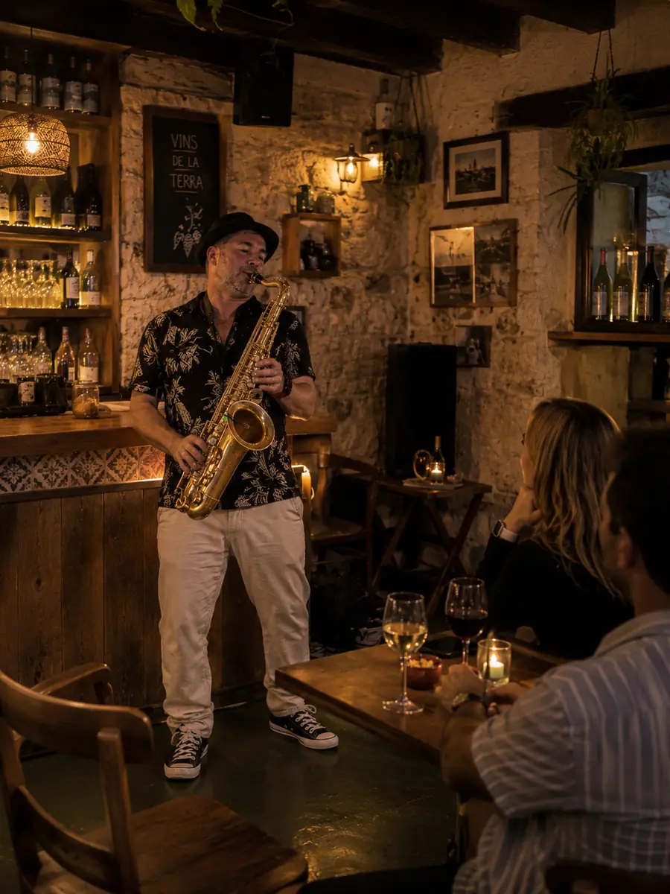

Un format polyvalent pour les événements à Palma
Palma concentre mariages urbains, événements d’entreprise, hôtels, restaurants et célébrations privées.
La prestation accompagne l’expérience naturellement et peut se déplacer vers Alcúdia, Pollença, Can Picafort ou Cala Millor.
Options habituelles
- Cocktails, dîners privés et événements corporate.
- Mariages, célébrations familiales et moments spéciaux.
- Hôtels, terrasses, rooftops et espaces gastronomiques.
- Sets avec DJ pour passer vers la fête.
Photos
Musique live pour espaces à Palma.


Aussi